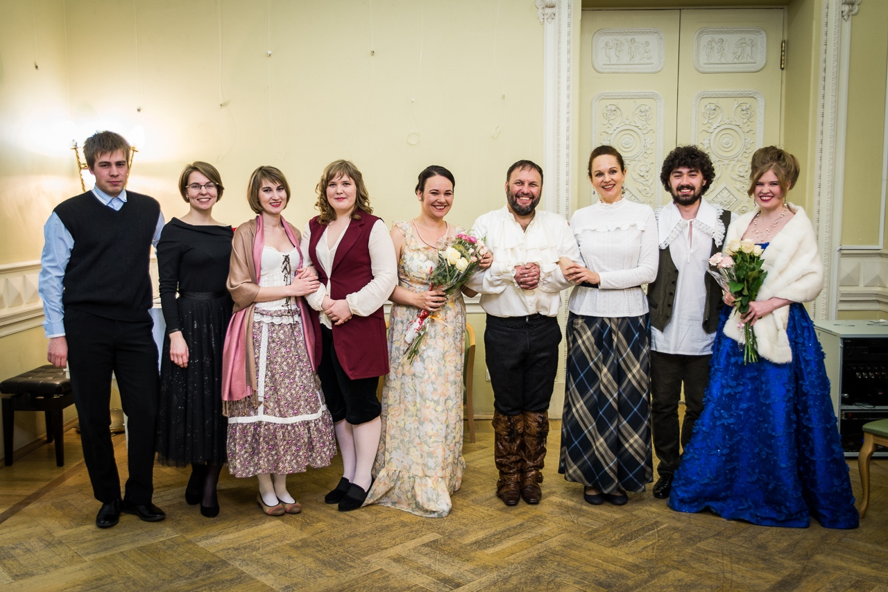

Музыкальный театр "AmaDeus"
Любительское объединение музыкальный театр «AmaDeus» – это содружество музыкантов, которых объединила идея воплощения простого театра, близкой классической музыки, оперы для всех. Создать оперный спектакль, понятный любому зрителю, раскрыть красоту камерной вокальной музыки, донести прелесть барочной музыки до каждого – наша главная задача. Наша цель – заинтересовать зрителя так, чтобы ему захотелось вернуться и вновь окунуться в бесконечный и прекрасный мир классической вокальной музыки.
